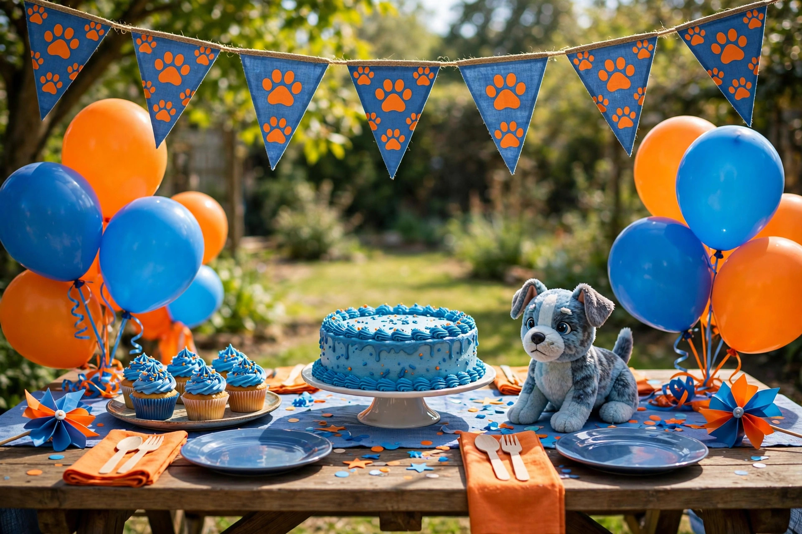

25 Bluey Birthday Party Ideas Kids Will Love
28 Nov 2026 · Kashif Hameed

If your child loves Bluey, a Bluey birthday party is the easiest win in party planning — the show gives you the colours, the games and the food ideas. These are 25 Bluey birthday party ideas kids will love, for ages 3 to 8, with honest prices and a simple plan.
Who this is for, and what it costs
This guide is for parents planning a Bluey birthday party for a child aged about 3 to 8 — at home, in a garden, or in a small hall — in the United States, the United Kingdom or Canada. The ideas work for 10 to 20 children, and most of the party is DIY, with just a few official Bluey bits worth buying.
Cost level: low to medium. A lovely Bluey party for 10 to 15 children costs around $75 to $150 in total, and a bigger party for 20 costs around $150 to $200. Time: about 2 hours to decorate and set up on the day, plus 1 hour of food prep, and 30 minutes to plan the games.
The 25 ideas
Decorations in blue and orange
- Blue and orange balloons (around $10–$20). Two colours only — Bluey’s blue and Bingo’s orange — across balloons, tablecloth and napkins.
- Paw-print bunting (around $5–$10). Blue and orange paw prints cut from card, strung across the table or the door.
- A Bluey balloon garland (around $15–$25). A garland over the door or table in blue, orange and white.
- Bluey plates and cups (around $8–$15). One pack of official plates and cups is worth buying.
- A “Happy Birthday” banner in blue (around $5–$10). A simple blue banner with the birthday child’s name, above the cake table.
Games from the show
- Keepy Uppy (around $3–$5). A red balloon that must not touch the floor — the game from the show.
- Musical Statues (around $0). The Bluey theme tune, played loud, then stopped — everyone freezes.
- Pass the Parcel (around $5–$10). A small toy wrapped in layers, passed around to the music until the last layer.
- Grannies dress-up (around $5–$10). Scarves, glasses and handbags so children can be Rita and Janet.
- Pin the tail on Bluey (around $5–$10). A printed Bluey poster and paper tails, played blindfolded.
Food and the cake
- A blue-iced birthday cake (around $25–$40). A simple cake with blue frosting and a Bluey cake topper.
- Blue-frosted cupcakes (around $10–$20). A dozen cupcakes with blue icing and orange sprinkles.
- Bluey biscuits (around $8–$15). Paw-print biscuits, iced in blue and orange.
- Orange and blue fruit cups (around $8–$12). Orange segments and blueberries in little cups.
- Mini hot dogs and sandwiches (around $10–$15). Small, easy finger food for hungry children.
Party favours and keepsakes
- A Bluey party bag (around $3–$5 each). A blue paper bag with a small toy, stickers and a sweet — one per child.
- Bluey stickers and colouring pages (around $5–$10). A sticker sheet and printed colouring pages in each party bag.
- A paw-print thank-you card (around $3–$5). A card with a paw print, tucked into each party bag.
- Bubble wands (around $5–$10). Small bubble wands in blue and orange.
- A Bluey plush for the birthday child (around $10–$20). A small Bluey or Bingo plush, given with the cake.
Moments that make it special
- A Bluey episode before the cake (around $0). One short episode on the TV while the cake is prepared.
- A “For real life” toast (around $0). The birthday child says one thing they love about being their age.
- A family photo with the cake (around $0). Everyone together behind the cake, before the candles are blown.
- Dance to the theme tune (around $0). Play the Bluey theme at the end, loud, and let the children dance.
- A Bluey story at bedtime (around $0). End the day with a Bluey storybook.
Supply and shopping list
You do not need to buy everything below — this is a checklist for one party of 10 to 15 children. Typical US prices are shown; prices vary by shop and season.
- Decorations (balloons, bunting, banner, plates and cups): around $25–$40
- Cake and cupcakes: around $35–$60
- Food and drink (sandwiches, fruit cups, juice): around $20–$30
- Games (balloon, parcel, poster, dress-up bits): around $15–$25
- Party bags and favours: around $3–$5 per child
- Paper plates, cups and napkins: around $5–$10
- Optional: a Bluey plush for the birthday child: around $10–$20
How to plan the party, step by step
- Pick two colours and stick to them. Blue and orange across everything — balloons, tablecloth, plates, food — makes the party look deliberate, not random.
- Plan one game per half hour. Keepy Uppy, Musical Statues, Pass the Parcel, then the cake — a game every 30 minutes.
- Set up the day before if you can. Bunting, balloons and party bags done the night before leave the morning free.
- Keep food simple and visible. Finger food on a low table children can reach themselves.
- Do the cake in the middle, not the end. Cake at the halfway point gives children energy for the last games.
- End with the theme tune dance. A loud, joyful ending means children leave happy and tired.
Tips that save time and money
- Buy one pack of official Bluey plates and cups, and make everything else DIY.
- Use the same balloons and bunting for the door, the table and the photo corner.
- Ask a friend or grandparent to run the games, so you can be with the birthday child.
Common mistakes to avoid
- Too many games. Five games are plenty — children want to play their favourites twice, not rush through ten new ones.
- Forgetting the younger siblings. A baby or toddler needs a quiet corner with bubbles or soft toys.
- A cake nobody can cut. A tall, hard cake takes forever to serve — a simple sponge cuts easily.
- Skipping the thank-you bags. Children expect a party bag — even a small bag with stickers and a sweet is enough.
Variations for different budgets, ages and occasions
Under $75: a home party with DIY paw-print bunting, blue and orange balloons, Keepy Uppy and Musical Statues, cupcakes and fruit cups.
Around $150: add a bakery cake with a Bluey topper, official plates and cups and a balloon garland.
For ages 3–4: keep games to Keepy Uppy, bubbles and dancing. For ages 5–6: add Pass the Parcel and Grannies dress-up. For ages 7–8: add a treasure hunt and a craft table.
Frequently asked questions
What colours are best for a Bluey birthday party? Blue and orange — Bluey’s blue and Bingo’s orange-red — with cream or white as a third colour. Two main colours across balloons, tablecloth and plates make the party look planned.
What games do you play at a Bluey birthday party? Play the games from the show: Keepy Uppy with a red balloon, Musical Statues, Pass the Parcel, and a Grannies game. Keepy Uppy needs only a balloon and a living room.
How much does a Bluey birthday party cost? A lovely home party for 10 to 15 children costs around $75 to $150 in total — decorations, food, a cake and favours. A few official Bluey plates and a cake topper are worth buying, but most of the party can be DIY.
Related posts
- 30 Birthday Party Ideas for Kids That Are Easy, Fun and Budget-Friendly
- 20 First Birthday Party Ideas That Are Simple, Sweet and Stress-Free
- 20 Party Decoration Ideas on a Budget That Look Expensive
- 20 DIY Party Favours Guests Will Actually Keep
- 25 Christmas Gift Ideas for Kids by Age They’ll Actually Play With
Last updated: 28 Nov 2026